Basics of Nuclear and Particle Physics
This is a Mathematica notebook for PHYS30121 Introduction to Nuclear and Particle Physics. This is the first attempt to write a Mathematica notebook with no prior standards set up. Therefore, it is subject to further update if new standards are included.
Author: Zhang Chang-kai
E-mail: phy.zhangck@gmail.com
This work is licensed under a Creative Commons Attribution-NonCommercial-ShareAlike 4.0 International License, except for specific notifications. Communications by email are welcomed regarding the content of this document or specific authorization of copyrighted materials.
Basic Concepts in Particle Physics
This section introduces several basic concepts in particle physics, including (1) elementary particles, (2) fundamental forces, (3) Feynman diagram, (4) natural units, (5) discrete symmetries, (6) spin-statistics, (7) cross section and decay rates.
Elementary Particles
Currently, the physics of elementary particles is described by the Standard Model. There are in total 61 distinct elementary particles in the Standard Model, including (1) 6 quarks × 3 colours + antiparticles × 2 = 36 distinct quarks, (2) 6 leptons + antiparticles = 12 leptons, (3) 8 gluons + 1 photon + 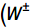,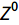) bosons = 12 gauge bosons, and (4) Higgs boson.
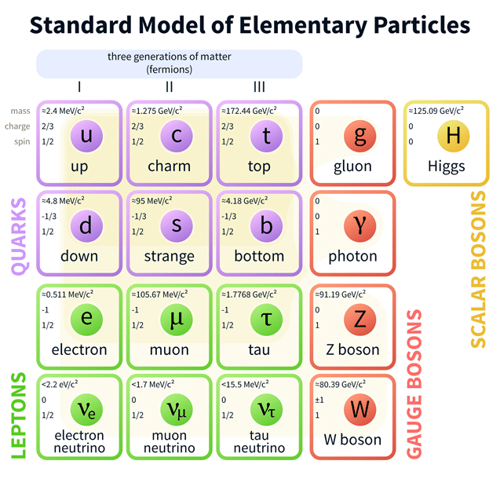
Figure 1 Standard Model of Elementary Particles
(Source: https://commons.wikimedia.org)
From the spin point of view, the elementary particles include spin-0, spin-1/2 and spin-1 particles. Wherein, the Higgs boson is the only spin-0 boson. All matter particles, i.e. quarks and leptons, are spin-1/2 particles; while gauge bosons, gluons, photons and W, Z bosons, are spin-1 particles.
From the interaction point of view, the matter particles are divided into leptons and hadrons. The former only interacts with electromagnetic and weak interaction, while the latter participates also in strong interaction. Hadrons consist of quarks. Depending on the number of constituent quarks, hadrons are divided into baryons (3 quarks) and mesons (2 quarks).
All particles have their corresponding antiparticles. Antiparticles have exactly the same parameters as particles except for an opposite value of all their charges, including electric charge, isospin and colour.
Fundamental Interactions
There are in general four fundamental interactions: electromagnetic, weak, strong and gravitational interaction. The last one only appears at very high energy and thus no quantum effects have been observed.
Strong interaction is generated by 8 gluons and only quarks take part in this interaction, where 8 comes from the dimension of SU(3). The range of the interaction is typically 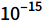m. The strong interaction binds the quarks into nuclei. Also, strong interaction generates mesons (e.g. π-meson) which initiate strong nuclear force which binds the nuclei into nucleons.
Weak interaction is generated by 3 gauge bosons 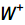, 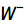 and , where 3 comes from the dimension of SU(2). The range of weak interaction is typically 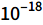m. The weak interaction is the causes of several crucial decays.
Electromagnetic interaction is generated by a single photon, which comes from the U(1) Abelian gauge theory. The range of the electromagnetic interaction is infinity, since the photons are massless.
There is an additional boson called Higgs boson, which gives the gauge bosons, especially W and Z bosons, mass via Higgs mechanism. Also, the Higgs mechanism in electroweak theory initiates the crucial Gell-Mann–Nishijima relation.
Feynman Diagram
The Feynman diagram is the standard method of interpreting a particle reaction process. A typical diagram of 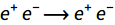 is shown as follows. A typical Feynman diagram consists of external lines, internal lines and vertex. Time conventionally flows from left to right. Arrows indicate the direction of charge flow and should be conserved at each vertex.
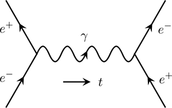
Figure 2 Feynman Diagram of 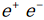 Annihilation
(Copyright (2018) Zhang Chang-kai. All rights reserved.)
For a specific process, the Feynman diagram is usually not unique. As an example, the following diagram is also a diagram for scattering. Differences occur at the right side of the diagram, with a reverse direction of charge flow. They represent different diagrams since they are topologically distinct.
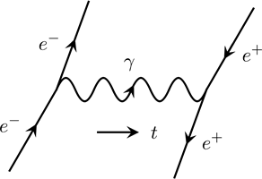
Figure 3 Feynman Diagram of Scattering
(Copyright (2018) Zhang Chang-kai. All rights reserved.)
The external line of the diagram represents a real particle, which follows the energy-momentum relationship 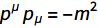; while the internal line represents a virtual particle, which does not preserve the energy-momentum relationship.
The vertex of the diagram is generated by the form of the interaction potential. For electromagnetic potential, namely 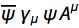, there are two spinor field and one vector field, which corresponds to two electron or positron and one photon in each vertex.
Quark Level Diagram
The strong force that binds quarks to form hadrons has a special property called asymptotic freedom. This property forbids free quarks. Therefore, any interaction involving quarks should happen accompanied by hadrons. The quark level diagram exists for this situation. The free particles involved are hadrons, with constituent quarks participating the interaction.
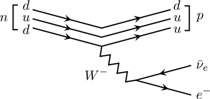
Figure 4 Quark Level Diagram of β-decay
(Copyright (2018) Zhang Chang-kai. All rights reserved.)
The above diagram is the quark level diagram of the weak β-decay of the neutron. One of the down quarks within the neutron decays to up quark, emitting a boson which eventually decays to an electron and an electron antineutrino. The other two quarks within the hadrons do not participate the interaction.
Field Theory and Interaction
In all field theory, complex fields, i.e. with distinct particle and anti-particle, always come in pairs; and real fields have the anti-particles being themselves. Therefore, if a process is allowed, then all processes generated by exchanging the initial and final state with particle anti-particle switched are also allowed.
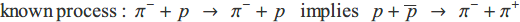
For example, let the elastic scattering of  and p be the known process. This immediately implies another process by moving the proton in final state to the initial state, and replace it by its anti-particle, plus the same process for 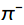, from left to right and replaced by 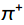.
and p be the known process. This immediately implies another process by moving the proton in final state to the initial state, and replace it by its anti-particle, plus the same process for 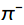, from left to right and replaced by 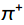.
Natural Units
In Nuclear and Particle Physics, the natural units are the most commonly used unit system. In general, natural units set the two physical constants to one
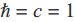
In this case, there are only one independent unit within length, mass and time. Also, the energy unit used in Nuclear and Particle Physics is electron volt, or eV, and its multiples, MeV, GeV and TeV. The typical energy scales are
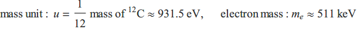
Also, there is another typical value which is essential, i.e. hc. This value occurs frequently in various estimations.
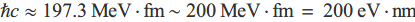
In the above formula, unit fm in fact only gives a factor of without producing the length unit m. This is important since it should not be counted into the balance of units.
As an example, we estimate the relationship between the mediate particle and the range of the interaction. As is presumed by the Standard Model, the fundamental interaction are mediated by the exchanged particles.
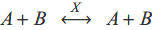
Consider the interaction mediated by particle X between particle A and B shown in the above reaction. In Feynman diagram, the particle X is represented by an internal line and thus is virtual, which needs not satisfy the energy-momentum relation.
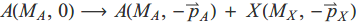
Consider the above particle process from a particle A at rest to two particles A and X. In this process, the momentum is conserved, while the energy presents a difference
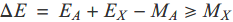
Therefore, there is always an energy excess. However, this energy excess is actually allowed in quantum theory, as long as it appears for a time less than
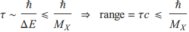
As an example, the strong nuclear force is mediated by pions with a mass of around 140 MeV. Therefore, considering h∼200MeV·fm. The range will be around 1.4 fm. Another example is photon which is massless. Therefore, the range of electromagnetic interaction is infinity.
Discrete Symmetries
In Quantum Field Theory, there are three types of discrete symmetries — charge conjugate C parity P, and time reverse T. These symmetries, or their combinations are conserved in fundamental interactions, and thus provides a criterion for allowed processes.
Also, the fundamental interaction also preserves some particle numbers, such as baryon number and lepton number. This will also be discussed in this section.
Parity Symmetry
The parity transformation simply reverses the space direction, i.e. 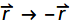. If the Hamiltonian of the system is commutable with the parity, then the process generated by the Hamiltonian will possess parity conservation.
Different physical quantities can have different properties under parity. The transformation, labelled by even (unchanged) and odd (switch sign), of common quantities is shown as follows
Even: angular momentum 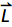, modulus 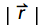, etc.
Odd: displacement 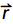, momentum 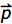, etc.
In Particle Physics, there are in general two sources for parities — angular momentum and intrinsic parity. The angular momentum gives a factor of
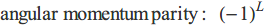
where L is the quantum number of the angular momentum. On the other hand, the intrinsic parity is determined by the types of the particle. Spin-0 bosons are evidently even in parity. For spin-1 vectors, 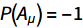; for spin-1/2 spinors, 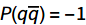, which means the particle and anti-particle of spinors should have inverse parities. Usually, particles are assigned +1 and anti-particles -1 for convention.
The parity is a multiplicative quantum number. So to get the overall parity of a composite state, simply multiply the parity of all its constituents and both sources of the parity. The strong and electromagnetic interaction preserves parity, while it is violated by weak interaction.
Charge Conjugation
The charge conjugation is an operation to reverse the particles and their corresponding anti-particles. If the Hamiltonian of the system is commutable with the charge conjugation operator, then the interaction will preserve the charge designation.
Since there are two classes of particles, one with distinct anti-particles and the other with anti-particles being themselves. Therefore, it is convenient to have them discussed separately. For the former one, labelled by a, the effect will be a parity factor; for the latter one, labelled by b, particle and anti-particle are exchanged.
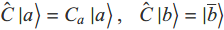
Photon γ is a typical particle of the former type. The charge conjugation parity of γ is 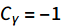. This is the intrinsic charge conjugate parity of the particle. Another source of the charge conjugate parity is the angular momentum, since switching the particle and anti-particle pair also switches the displacement but preserves the momentum. Thus
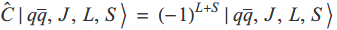
The charge conjugation parity is also a multiplicative quantum number. So it can also be obtained by multiplication for composite states. The strong and electromagnetic interaction also preserves charge conjugation, while it is violated by weak interaction. However, the weak interaction will preserve the combination, called CP invariance, of the charge conjugation and parity.
Time Reversal
The time reversal operation simply reverses the direction of time, i.e. t→-t. The properties of common quantities under time reversal is listed as follows:
Even: displacement , etc.
Odd: time t, momentum , angular momentum , etc.
In Quantum Field Theory, it is required that the theory is invariant under a combination of CPT transformation, which essentially rotates the whole system by 180° and exchanges all particles and anti-particles. The CPT theorem also implies that the particle and anti-particle should have exactly the same mass.
Spin-Statistics Theorem
The spin-statistics theorem states that all particles with integer spin are bosons, while all particles with half-integer spin are fermions. Note that this theorem applies not only to the elementary particles, but also their composite states. Therefore, composite particle 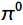 should be bosonic, and p and n should be fermionic.
The essence of this theorem lies in Quantum Field Theory. By exchanging two particles, it is similar to a parity operation. Therefore, the half-integer spin state rotates a half-integer times of 2π, which reduces to π, while the integer spin state rotates an integer times, which reduces to 0. And a rotation of π in 4-dimensional spacetime gives a factor of -1.
Cross Section and Decay Rate
The cross section and decay rate are the two major observables in Particle Physics. They are related to the scattering amplitude which can be computed in Quantum Field Theory. The idea of cross section arises by considering an equivalent rigid ball that generates the same scattering distributions. And the decay rate measures the speed of the spontaneous decay.
Cross Section
In Particle Physics, particles are considered to be a point-like object. The scattering of particles is then essentially generated by the interaction between two point particles. However, in classical physics, point-like incident particles can be scattered by a ball with finite size, and it is possible to find an equivalent ball with a finite radius which generates the same scattering distribution through classical scattering. Hence, the largest cross section of this ball is defined as the cross section of the interaction.
According to the above idea, if the cross section of some interaction is σ, then the total area of N target particles available for scattering will be Nσ. If there are in average 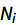 incident particles per unit area, it is then expected that 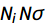 particles will be scattered. Considering that we usually have a sustained beam of incident particles, it is convenient to divide the scattering by time, which turns 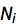 to flux J. Consequently, we have
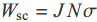
where 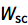 is the scattered particle per unit time. The three quantities other than the cross section can all be measured and then the cross section can be computed. In practice, a more commonly used derivation of the cross section is the differential cross section dσ/dΩ, which measures the scattering rate at a certain solid angle.
Decay Rate
The decay rate is simply defined as the number of decay events per unit time. However, there are two derivations that are used more frequently — the lifetime and the decay width. Let be the probability of decay per unit time (computable by scattering amplitude). Then the number of decayed particles per unit time is
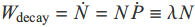
Therefore, the number of remaining particles goes like 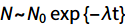. Define the lifetime of the particle as τ=1/λ, which is the characteristic time of this decay. Moreover, define the decay width of the particle as Γ=h/τ. Within the lifetime, the uncertainty in energy is given by ΔE=h/2τ=2Γ. Therefore, Γ measures the characteristic width in the energy spectrum.
The typical lifetime of particles decayed by strong interaction is 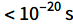; that by electromagnetic interaction is 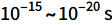; that by weak interaction is 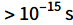. Therefore, by computing the lifetime can we tell the dominant interaction which causes the decay.
Fundamental Interactions
There are in general four fundamental interactions of nature — electromagnetic, weak, strong and gravitational interaction. The last one requires an energy scale much higher than current technology can reach, and is therefore absent in Particle Physics. The electromagnetic interaction is relatively simpler and more universally studied. Hence, Particle Physics cares majorly about the strong and weak interaction.
The central concept to investigate in Particle Physics is the quantum number of the particle state. Concretely, the two major study object in Particle Physics — elementary particles and their interactions, are related to certain quantum numbers as
elementary particles — particle state identified by certain quantum numbers
fundamental interactions — conservation of quantum number in processes
There are in general four types of quantum numbers — charge, flavour, dynamic and composite quantum number. More details will be provided in the subsequent context on these quantum numbers. A summary is offered below on the preservation of the quantum numbers under the electromagnetic, strong and weak interaction process.
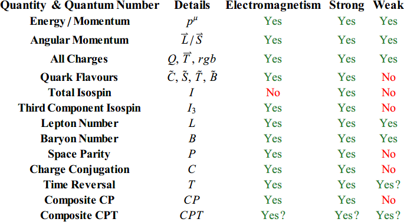
Charge Quantum Number
In Gauge Field Theory, each interaction is implemented by the local gauge symmetry, each of which gives a conserved charge. In Standard Model, the fundamental interactions are given by a U(1)×SU(2)×SU(3) gauge theory. For the three interactions of interest, they are
electric charge Q — given by U(1) gauge symmetry — electromagnetic interaction
weak isospin 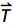 — given by SU(2) gauge symmetry — weak interaction
colour charge rgb — given by SU(3) gauge symmetry — strong interaction
The number of the charge in each gauge symmetry is given by the dimension of the representation space; while the number of gauge particles is given by the dimension of the gauge group itself. Therefore, electromagnetic interaction is mediated by a single photon, weak interaction by 3 gauge bosons 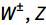, strong interaction by 8 gluons.
Flavour Quantum Number
Flavours indicate the types of elementary particles. In Standard Model, there are six flavours of quarks — up/down, charm/strange, top/bottom; and six flavours of leptons — electron, muon, tau and their corresponding neutrinos. In quark model, there are in total five flavour numbers:
Isospin 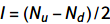, where and are the number of up and down quarks
Charmness , where is the number of charm quarks
Strangeness , where is the number of strange quarks
Topness , where is the number of top quarks
Bottomness , where is the number of bottom quarks
Considering that the up, charm and top quarks carry a 2/3 unit of electric charge, and down, strange, bottom quarks a 1/3 unit of electric charge, it is easy to verify that there exists the following relationship between flavour numbers and electric charge
where is the hypercharge of the state. The above relationship is the so-called Gell-Mann–Nishijima relation. Both the electromagnetic and strong interaction will preserve the flavour quantum numbers, while they will be modified by weak interaction.
Composite Quantum Number
There are two composite quantum numbers — lepton number L and baryon number B. The lepton number is the number of leptons subtracted by the number of anti-leptons in the state, regardless of the flavour of leptons. The baryon number is the number of baryons subtracted by anti-baryons in the state.
In quark model, quarks will form a bound state by strong interaction. Quarks carry a 1/3 unit of baryon numbers and anti-quarks -1/3 unit. Thus, for baryons (anti-baryons) which consist of three quarks (anti-quarks), the baryon number will be +1 (-1). And for mesons, it must consist of a quark and an anti-quark, which yields a 0 in baryon number.
In weak interaction, the flavour quantum numbers are not conserved. However, the lepton and baryon number will always persist. They are the major two quantum numbers to consider in determining whether a weak process is banned.
Dynamic Quantum Number
The dynamic quantum numbers are those related to the dynamic properties and spacetime symmetries. In general, there are the following groups of dynamic quantum number
energy/momentum
orbital/spin angular momentum
discrete symmetries C, P, T
composite of discrete symmetries CP, CPT
The energy/momentum is required to be conserved universally. Therefore, it is somehow trivial in Particle Physics. The grand total angular momentum will also be required to conserve for any processes. Thus, the discrete symmetries and their composition need extra attention.
For electromagnetic and strong interaction, the C, P, T symmetries are individually conserved, so do their compositions. However, the individual C, P symmetries are not preserved by weak interaction. In most processes, their combination CP will be conserved. However, the CP conservation will also be slightly violated in some special weak processes due to the flavour mixing mechanism. Finally, the CPT invariance is forced for all processed by Quantum Field Theory.
Strong Interaction
The strong interaction is a fundamental interaction mediated by gluons. The standard theory for strong interaction is Quantum Chromodynamics, which is an SU(3) gauge theory. The SU(3) local gauge symmetry equips spinor field with three components, which yields the three colours of quarks. The dimension of the Lie algebra of SU(3) is 8, and thus we have 8 distinct gluons as components of the connection. The gluons couple to colour of quarks and generate strong interaction in between.
The SU(3) gauge theory is a non-Abelian gauge theory. Thus, unlike photons, gluons can have self-interaction. This fact produces a unique feature of QCD — the asymptotic freedom, which means that the strong interaction becomes even stronger at low energy (large distance) and weaker at high energy (short distance). In low energy, the quark system is strongly correlated and thus no methods other than lattice QCD are able to tackle.
The asymptotic freedom subsequently leads to another feature — quark confinement, or colour confinement, which bans the existence of any free quarks. Consequently, the QCD requires that quarks stay always in colourless bound states (hadrons).
As a result of the quark confinement, quarks are not able to be observed directly. Instead, the only observable is the products of the hadron scattering. The gluons form flux tubes between quarks with a force equivalent to . When the hadrons collide with an energy sufficient to break these tubes, the incident hadrons break and form new hadrons. The outgoing hadrons form hadron jets. The angular distribution of these jets is critical in determining the reality of quarks.
For a long time, quarks are considered as mathematically convenient tools for analysing strong interactions between hadrons. The evidence suggesting that quarks are in fact a realistic entity arises in consideration of the angular distribution of hadron jets produced by
Quark-antiquarks pairs will be created by the above high energy scattering process. Although the colour confinement will immediately bind quarks into hadrons, they preserve the angular distribution of its parent process
In this case, by studying the two jets of hadrons in this scattering experiment can we testify the reality of quarks. In most cases, there will be two jets “back-to-back”, while occasionally, three jets will be observed. This is due to the emission of gluons (bremsstrahlung) before the quarks eventually fragment to hadrons. Thus, this is the evidence of the reality of gluons.
Running Coupling
In Quantum Field Theory, the strength of the interaction is determined by the coupling constant. However, due to the existence of the quantum fluctuations, the coupling constant is not actually a “constant”. Instead, it depends on an energy scale. Consider Quantum Electrodynamics (QED) first. Quantum Field Theory predicts that there will be virtual particle-antiparticle pairs randomly created and annihilated. This can be seen in the following diagram.
Figure 5 One-loop Correction of QED
(Copyright (2018) Zhang Chang-kai. All rights reserved.)
This diagram comes from the one-loop correction of the photon propagator (virtual photon), and can be joined subsequently to gain higher order corrections with more loops. These particle-antiparticle pairs flood the vacuum and make the vacuum behave like a dielectric material. Therefore, any electric charge will produce vacuum polarization. The polarized vacuum creates a shield around the charge and reduces the effective charge observed by a distant observer. This effect is understood as electric field screening.
In gauge theory, the coupling is closely related to the charge, e.g. in QED, the coupling constant is the fine structure constant . Thus, the screening effectively leads to the scale dependence of the coupling. This is the origin of the running coupling.
In Quantum Field Theory, the quantitative scale dependence of coupling comes from the renormalization. Schematically, the energy (or modes) of the particle-antiparticle pairs cannot be as high as possible. Conversely, there must be a cut off at sufficiently high energy. This yields an energy scale μ. An explicit computation of loop correction produces the following form of the scattering matrix
The overall scattering matrix should be independent of the fake parameter μ. Therefore, should change covariantly with . By differentiating with respect to lnμ, we get the how varies with μ. For QED, there is
The right hand side is the so-called beta function. However, this equation only generates how varies, i.e. we can only get the relationship between and some reference value . Concretely, the solution looks like
It is important to notice that increases as the energy scale μ increases. A theory with this property is described as infrared free, and the perturbation theory becomes more and more accurate at low energies (or large distances).
Things become different in Quantum Chromodynamics (QCD). As a non-Abelian gauge theory, the one-loop correction consists not only of the virtual particle-antiparticle pairs, but also the self-coupling of gluons as well. The responsible diagrams are shown as follows.
Figure 6 One-loop Correction of QCD
(Copyright (2018) Zhang Chang-kai. All rights reserved.)
The existence of a second possibility brings all the differences. Instead of creating a shield around the charge, the self-coupling produces an anti-screening effect, i.e. the interaction becomes even stronger at long distances. Quantitatively, the beta function of QCD is
where is the number of flavours participating the interaction. Notice that this beta function is negative, which indicates that the anti-screening effect overcomes the screening and makes the overall strong interaction stronger at long distances. A theory with a negative beta function is described as asymptotic free.
Weak Interaction
The weak interaction is a fundamental interaction mediated by  and bosons. Unlike the electromagnetic and strong interaction, the weak interaction will not preserve the flavours. Therefore, all the processes which include flavour changes will be initiated by weak decay.
and bosons. Unlike the electromagnetic and strong interaction, the weak interaction will not preserve the flavours. Therefore, all the processes which include flavour changes will be initiated by weak decay.
Both leptons and quarks couple with the , bosons. Moreover,  has zero electric charge. Therefore, the following context will be arranged by an order of (1) vertices of leptons and lepton mixing, (2) vertices with quarks and quark flavour mixing, (3) vertices.
has zero electric charge. Therefore, the following context will be arranged by an order of (1) vertices of leptons and lepton mixing, (2) vertices with quarks and quark flavour mixing, (3) vertices.
The weak decay of leptons is similar for all generations of particles. There are two major  decay vertices shown as follows. The
decay vertices shown as follows. The  particles carry electric charges and thus will convert ℓ=e,μ,τ to its accompanied neutrinos.
particles carry electric charges and thus will convert ℓ=e,μ,τ to its accompanied neutrinos.
Figure 7 Weak Decay of Leptons
(Copyright (2018) Zhang Chang-kai. All rights reserved.)
The eigenstates of the weak decay are usually not the same as the neutrino creation and annihilation operator eigenstates. Therefore, neutrino mixing occurs. The actual state generated by weak decay will then be
It is now known that the neutrinos have small masses, and they are different for different neutrinos. Therefore, neutrinos with the same energy possess different momenta, and cause the difference in phase. The distance to show this difference is
The magnitude of the mass difference is . So a typical neutrino with energy greater than 1MeV takes over 1km to show an observable difference in phase. Thus, the experiments are usually done in the vicinity of a nuclear reactor.
The weak decay of quarks can be derived similarly to that of the leptons. Hence, the weak decay vertices of for the first two quark generations are shown as follows. Note that the electric charge flow of  is often omitted.
is often omitted.
Figure 8 Weak Decay of Quarks
(Copyright (2018) Zhang Chang-kai. All rights reserved.)
If only the above four vertices exist, then the weak interaction will preserve quark generations. However, it does not. This fact triggers the quark mixing. Similar to the neutrino mixing, the quarks in different generations also mix
Therefore, processes such as may exist. The CKM matrix can be regarded as a 3D rotation matrix. The first two generations of quarks are particularly intriguing, since they are much lighter. Therefore, for d and s quark, there is
The angle is the so-called Cabibbo angle. This angle is very small, around 13°. On the contrary, the mixing angle of neutrinos can be as high as 45°. The quark mixing scheme enables vertices by shuffling the d, s, b quark in the shown vertices.
The weak decay mediated by neutral current ( particle) is a relatively different sort of weak decay. In Electroweak Unified Theory, the particle is created by a field being a mix of SU(2) gauge field and U(1) gauge field. Typical vertices include
Figure 9 Neutral Weak Decays
(Copyright (2018) Zhang Chang-kai. All rights reserved.)
where q represents any quarks. The coupling strength of  particle is common to all flavours. Therefore, there is no mixing mechanism, which indicates that the weak decay by preserves particle flavours. This feature resembles very much the electromagnetic interaction. And thus the processes mediated by photons can also be mediated by weak decay.
particle is common to all flavours. Therefore, there is no mixing mechanism, which indicates that the weak decay by preserves particle flavours. This feature resembles very much the electromagnetic interaction. And thus the processes mediated by photons can also be mediated by weak decay.
Discrete C,P Violation
The parity and charge conjugation symmetry are broken by weak interaction. In short, this is essentially the result of the asymmetry of chirality (or helicity) of particles participating the weak interaction. This section will discuss the chirality (and helicity) first, followed by an illustration of its consequences on parity violation.
The chirality is an intrinsic property of the spin-1/2 fermions. There are in general three types of spin-1/2 fermions — left-handed spinor (1/2,0), right-handed spinor (0,1/2) and Dirac spinor (1/2,0)(0,1/2). Chirality refers to this left- and right-handed property. The chiral spinors can be told by applying the projection operator
The eigenspinor of and  will be left- and right-handed respectively. In addition, Dirac spinor is a mixture of left- and right-handed spinor, and can be decomposed into a left- and a right-handed component.
will be left- and right-handed respectively. In addition, Dirac spinor is a mixture of left- and right-handed spinor, and can be decomposed into a left- and a right-handed component.
The helicity is the projection of the particle spin onto the direction of momentum. The spin vector is always studied by its magnitude and z-component . Set the z-axis as the direction of the particle momentum. The possible value of will be +h/2 and -h/2, which corresponds to the helicity being +1 and -1.
The helicity and the chirality coincide with each other for massless particles. Concretely, the left-handed massless particle has a helicity of -1, while that of a right-handed one is +1. However, this is not true for the massive particles. Massive particles move at a speed lower than light speed. So a Lorentz transformation to a frame moving faster than the particle will reverse the helicity.
The parity violation of weak interaction can be spotted by the following fact: only left-handed fermion and right-handed anti-fermion participate the weak interaction. The parity will exchange the chirality while the charge conjugation reverses the fermion and the anti-fermion. Therefore, both parity and charge conjugation are violated in weak interaction.
Figure 10 Parity and Charge Conjugation of Neutrinos
(Adapted by Zhang Chang-kai from Martin (2009).)
However, it can be observed that a combination of parity and charge conjugation, i.e. CP, will turn a left-handed fermion to a right-handed anti-fermion. Therefore, the weak interaction should possess CP invariance. Nonetheless, the CP invariance is also slightly violated when the flavour mixing occurs. In this case, weak interaction only preserves the weakest CPT symmetry.
Light Hadron Multiplets
The u, d, s quark are much lighter than the other three quarks, and thus are much easier to produce. Also, their mass difference is small compared to the mesons and baryons they form. So mass is not a crucial parameter for these mesons and baryons, and we can group them into “supermultiplets” according to their quantum numbers.
Figure 11 Mesons and Spin-1/2 Baryons Supermultiplets
(Adapted by Zhang Chang-kai from Martin (2009).)
The above figure shows the J=1 meson nonet (9 mesons) and the J=1/2 baryon octet (8 baryons). The content of the particle can be deduced from the quantum numbers. For example, for meson, there is , which leads to a u quark and an anti-quark. The only exceptions are the three mesons. They are the combination of , , . Similar deduction also holds for baryons. For example, baryon has ,  . For baryons, B=1. So . Thus, it must contain a u quark and two s quarks.
. For baryons, B=1. So . Thus, it must contain a u quark and two s quarks.
Figure 12 Spin-3/2 Baryons Supermultiplets
(Adapted by Zhang Chang-kai from Martin (2009).)
Three quarks can also form J=3/2 baryons. This angular momentum indicates that the three quarks are totally symmetric, which enables particles like uuu, ddd and sss. These baryons form a decuplet (10 baryons), shown as the lowest layer in the above pyramid. Particularly, the baryons consisting of three s quarks, i.e. , decay as
Figure 13 Decay of and Subsequent Decays
(Copyright (2018) Zhang Chang-kai. All rights reserved.)
In 1964, particle physicists in Brookhaven National Laboratory happened to capture all the above particle reactions within one bubble chamber photograph. [V. E. Barnes et al., PRL 12 (1964) 204] This is one of the most famous photographs in the history of Particle Physics.
Figure 14 Decay in Bubble Chamber
(Source: V. E. Barnes et al. (1964))
Heavier quarks, like c quark, can form baryons with other light quarks. The structure is shown as a pyramid. Also, heavy quarks like c, b quark can form mesons. However, since the typical size of hadrons is 1fm, the typical momentum will be p∼hc/1fm∼ 200MeV. This is much smaller than the mass of the hadron. So these heavy mesons behave like positronium, and hence known as “quarkonia”.
The heaviest quark, t quark, never forms hadrons. This is because the lifetime of t quark is around , which is smaller than the typical time within a hadron, .
Weak CP Violation
For the weak interaction within the two generations of particles, the C, P symmetry are individually violated, but their combination CP is preserved. However, if the interaction involves three or more generations, the particle mixing will produce the CP violation.
For three particle generations, the mixing matrix will be a unitary 3×3 matrix. This matrix can be parameterized by 9 independent parameters, including 3 mixing angles and 6 phases coming from the 3 particle eigenstate (e.g. u,d,s) and the 3 weak eigenstate (e.g. ). However, these phases are unobservable except for an overall phase. So the mixing matrix can in fact parameterized by only 4 independent parameters.
The additional phase brings the time reversal violation, since a time reversal will reverse initial and final state which differs in a complex conjugate. On the other hand, the CPT invariance is enforced for current theories. So there must be a CP violation to compensate the T violation.
Mass and Higgs Mechanism
In Standard Model, all three fundamental interactions are described by gauge theories. However, an essential trait of the gauge theory is that gauge bosons should be massless, in order to preserve gauge symmetry. This is true for electromagnetic and strong interaction, as photons and gluons are strictly massless. However, this is not true for bosons. So there must be an explanation this mass.
The story begins with a complex gauge theory. Usually, the Lagrangian of a complex  gauge theory can be written as
gauge theory can be written as
Parameter m is traditionally the mass of the scalar field and thus . The potential is shown in the left figure below. However, consider now . This generates a very different theory, and m is no longer the mass. The potential will be like the right figure below.
Figure 15 Potentials before and after Symmetry Breaking
(Copyright (2018) Zhang Chang-kai. All rights reserved.)
It is discovered that φ=0 is no longer the lowest energy position of the potential. Instead, the ground state will be a circle in the complex plane. Therefore, φ is not suitable for the quantization, as a non-zero vacuum expectation value will give a non-zero overlap of vacuum and one-particle state. An appropriate field redefinition is
where v is a constant, ρ(x) is the field we want and χ(x) is an additional Goldstone boson. This additional boson is not a desirable thing. However, we also notice that the last factor with the Goldstone boson may be cancelled by a local gauge transformation. Therefore, adding local gauge symmetry will validate this theory. Moreover, the Lagrangian is now
where g is the coupling constant. Now we see that the gauge field possesses a mass of M=gv. This is the so-called Higgs mechanism, i.e. use the local gauge transformation to cancel the Goldstone boson and at the same time gives the gauge field mass. The scalar field whose ground state breaks a gauge symmetry is called a Higgs field.
Nuclear Phenomenology
The nuclear phenomenology explains the nuclear experiments without considering structures inside the nucleon. This section will include (1) strong nuclear force, (2) charge distribution & nuclear size, (3) models of nucleus structure, (4) α-decay and β-decay, (5) fusion & fission.
Strong Nuclear Force
The strong nuclear force is the force that binds the nucleons to nuclei. It is important to distinguish the strong nuclear force with strong force, as their nature is very much disparate. The strong force binds quarks to hadrons, and is mediated by gluons. For strong nuclear force, the colourlessness of nucleons makes gluon exchange implausible. So it must be mediated by some other particles.
At short distances, nucleons may exchange their quarks. These quarks resemble the valence electrons in a covalent bond. Nonetheless, to keep nucleons colourless, shared quarks should have the same colour. This reduces the effective force and cannot explain the strength observed in experiments.
At long distances, one exchanged quark can annihilate with a one of the (anti)quark in a randomly emerged pair, and form a meson with the other exchanged quark. Therefore, the strong nuclear force is mediated by mesons. The most common one will be the pion, whose mass fits with the range of force (∼1.4fm) very well.
At intermediate distances, strong nuclear force can be mediated by multiple pions exchange or heavier mesons. In addition, it is also suggested that pion exchange can form excited states like Δ particles in this case.
Overall, the strong nuclear force is the effective force of all these interactions. It behaves as an attraction as the distance between nucleons is large, and repulsion when the distance is small. The exact mechanism of the repulsion is yet unknown. It is suspected that the ω meson exchange and quark Pauli principle may be the culprit.
In addition, the strong nuclear force is charge symmetric, i.e. pp=nn, and almost charge independent, i.e. pp=nn≈pn. This is because pp and nn are largely mediated by and pn by which is 5MeV heavier. On the other hand, it is spin dependent. Finally, the strong nuclear force saturates, i.e. a nucleon only interacts with nucleons nearby.
Charge Distribution & Nuclear Sizes
The charge distribution in a small region is typically studied by bombarding the target with high energy particles, and measure the differential cross section of the interaction. For charge distribution of nuclei, this is achieved by electron scattering. The derivation starts with the simplest model of Rutherford scattering
The Rutherford scattering treats the projectile and target as point-like particles and thus cannot be used to study the distribution of charge. Therefore, several modifications are needed. Considering the electron spin leads to the Mott cross section, upon which a form factor will make it realistic
where is the charge distribution and the momentum transfer. Notice that the form factor is simply a Fourier transform of the charge distribution. This formula allows us to deduce the charge distribution via the experimental cross section.
Particularly, we can extract the mean-square charge radius of the target. For medium and heavy nuclei, it is found to be proportional to , where A is the atomic number. The nucleus is often approximated by a homogeneous hard sphere whose radius is linear to  . Thus, we deduce the nuclear radius as
. Thus, we deduce the nuclear radius as
The coefficient 1.21 comes from the fit to a range of data, e.g. 55≤A≤209 given in Barett and Jackson (1977). A further insight can be seen if we take the cube of both sides. In that case, the volume of the nucleus will be proportional to the number of nucleons, which implies that nucleons can be approximated by some ball with a fixed volume.
Mass Spectroscopy
The mass is one of the fundamental properties of a particle. A great deal of effort has been put into measuring the mass of either stable or unstable nuclei. It is hither presented two typical methods of mass spectroscopy — deflection spectrometer and penning trap.
Deflection Spectrometer
Deflection spectrometer is one of the simplest ways to measure the mass-to-charge ratio. Usually, the deflection spectrometer consists of a velocity selector followed by a homogeneous magnetic field. A schematic setup is shown in the following figure.
Figure 16 Deflection Spectrometer
(Adapted by Zhang Chang-kai from Martin (2009).)
The ion beam first passes through a velocity selector which is filled with both an electric and a magnetic field. This picks the particles with velocity . These particles then go into the second region with only a uniform magnetic field and hit the detector.
Utilizing the detector in the end can we extract the radius of the circular motion (called cyclotron motion). It can be shown that the radius of cyclotron motion is R=mv/qB. Therefore, the charge-mass ratio can be computed from .
Penning Trap
Penning trap is a particle trap which can also be used to measure the charge-mass ratio. The Penning trap consists of a well-shaped electric quadrupole field and a uniform magnetic field. Without applying the electric field, charged particles undergo the cyclotron motion as usual. The electric field confines the particles along the axial direction and causes the particles to drift along a circle (called magnetron motion). The frequencies of the cyclotron and magnetron motion yield the charge-mass ratio.
Figure 17 Penning Trap and Particle Trajectory
(Copyright (2018) Zhang Chang-kai. All rights reserved.)
The Penning trap is renowned for the high accuracy. Usually, the relative error of measurement can be as low as . Also, only a small number of particles (usually ∼100) are needed for a measurement, and the overall time required can be as short as 0.1s. Therefore, Penning trap can be used to measure the charge-mass ratio of very short-lived particles.
Nuclei and Nuclear Masses
A nucleus consists of neutrons and protons, so the number of them can be used to identify different nucleus. Concretely, a nucleus is labelled by (1) atomic number Z: the number of protons; and (2) mass number A: the number of nucleons. The number of neutrons N can thus be deduced as N=A-Z.
Nuclei with the same A but different Z are called isotopes. They are essential in nuclear radiations which emit or absorb neutrons. Nuclei with the same Z but different A are called isobars. They are essential in -decays, which flips the neutrons and protons.
The stable nuclei lie approximately around the line of N≈Z, and any deviation (either by adding extra neutrons or protons) will decrease the stability of the nuclei, until the nuclei reach a drip line where no extra neutrons or protons can be bound. The stability of the nuclei and the decay of the unstable nuclei are the central topics in Nuclear Physics.
There are two kinds of mass definitions used in Nuclear Physics, the nuclear mass and the atomic mass. The nuclear mass of an atom is the mass of the nucleus; while the atomic mass refers to the mass of the atom, including the mass carried by the electrons.
The binding energy is the energy difference between the individual particles and their bound states. Concretely, the binding energy of the atom is defined as
The mass excess is the mass difference between the mass of the atom and the expected mass calculated from the atomic mass unit , i.e.
The reaction Q-value is the energy released in a typical nuclear reaction. It can be extracted from the mass difference between initial particles and final products, i.e.
Logically, we need to use the nuclear mass. However, the nuclear mass is very much hard to obtain in practice, and we hope to replace it with atomic mass. The only discrepancy will be the difference in binding energies of the electrons. However, this contribution is small (<100keV) compared to the nuclear mass ∼100MeV, and thus is usually ignored.
Liquid Drop Model
The stability of the nuclei depends heavily on the binding energy, or binding energy per nucleon B/A to be more precise. There are currently no essential theories which can explain the behaviour of B/A. So we can only rely on the phenomenological model and empirical formulas, and the liquid drop model is the most basic one of them.
Liquid drop model arises when noticing two similarities between the liquid drop and the nucleus: (1) their mass density is generally uniform (assuming nucleons are spherical balls); (2) the interaction energy is generally proportional to their mass (B/A falls in a small range of 7MeV∼9MeV and can be regarded as constants).
Figure 18 Semi-empirical Mass Formula
(Source: https://commons.wikimedia.org)
The liquid drop model (plus some properties from Fermi gas model) gives rise to the well-renowned Semi-empirical Mass Formula, or SEMF. SEMF consists of five terms with physical origins, but each term is accompanied by a coefficient to be determined by the fitting of the experimental data later (which makes it semi-empirical).
In the above formula, the s are the proportionality coefficient, takes 1 if there are an odd number of both neutrons and protons; -1 if both even; and 0 otherwise. The physical origin of the five terms are explained as follows
Volume term: the first term is the volume term. Due to the saturation of the strong nuclear force, each nucleon experiences approximately the same force and possesses the same energy, which makes the binding energy directly proportional to the number of nucleons.
Surface term: the second term is the surface term. The nucleons on the surface will experience a relatively lower strong nuclear force. This contribution is subtracted by the surface term. Note that the radius of nuclei is and thus surface .
Coulomb term: the third term is the Coulomb term, which takes into account the Coulomb forces between the protons. Each proton will be interacting with all the other protons, and the Coulomb force is inversely proportional to the distance.
Asymmetry term: the fourth term is the asymmetry term. This comes from the Fermionic property of the nucleons. Any discrepancies between the number of protons and neutrons will result in a higher kinetic energy and weaken the binding.
Pairing term: the fifth term is the pairing term. If the nucleons come in pairs, they tend to be closer and increase the energy. Therefore, this term carries a factor to select the pairing situation in the nucleus.
The Semi-empirical Mass Formula explains the shape of the binding energy per nucleon very well. In practice, it works to about 1MeV and creates less than 1% of the relative error. This accuracy is good enough for most situations. However, it is not suitable for quantities like the Q-value as it requires higher accuracy.
Shell Model
The Semi-empirical Mass Formula has provided a relatively accurate prediction of the binding energy. However, it can not explain the small fluctuations around the smooth line. Particularly, it cannot explain why there exist some special nuclei that have extra stability. This implies that there are substructures within the nuclei and new phenomenology is needed.
It has been known in Atomic Physics (and Chemistry) that there exists a set of elements which possess extra chemical stability — the so-called inert gas. The quantum mechanical origin of this extra stability comes from the shell structure of these elements. The outermost shell is fully filled by the electrons, which is a considerably stable configuration.
In Nuclear Physics, some nuclei are also found to own extra stability. Experimentally, the number of protons and neutrons in these stable nuclei are found to be one of the following
These numbers are called magic numbers. Due to their similarity to the atomic magic numbers, a phenomenological model, the shell model, is established based on the shell structure of the nuclei. In shell model, there exists a central potential similar (but not the same as) the Coulomb potential. Besides, the spin-orbit interaction is also considered. As the potential is not a Coulomb potential, angular momentum quantum number l is not restricted by the principal quantum number n. This model provides a precise prediction of the magic number, see Wikipedia for detailed information.
Nuclei whose number of either protons or neutrons being one of the magic numbers make a closed shell and obtain extra stability, just as the atoms. Moreover, nuclei whose number of both nucleons are one of the magic numbers (may not be the same) gain even greater stability (called doubly magic). An important case is the Helium nuclei (α-particle), which plays an essential role in the α-decay of heavy nuclei.
The next to study is the ground state spins and parities. For a closed shell, nucleons pair up and form a state. The other situation can always be decomposed into a closed shell plus valence nucleons. For a single valence nucleon, the ground state spin and parity are fully controlled by this valence nucleon. For more valence nucleons, especially if both shells are not closed, the situation gets complicated and hard to predict.
Nuclear Reaction
Nuclear ground states are often unstable. Therefore, they may spontaneously go through some nuclear reaction to reach a more stable state. The tendency of the reaction can be viewed from the binding energy per nucleon. B/A increases first and reaches a summit at  , before a gradual decrease as the number of nucleons increases. Thus, nuclei before tend to join together, while those after tend to break apart. Four types of reactions are hither introduced: (1) α-decay, (2) β-decay, (3) fusion, (4) fission.
, before a gradual decrease as the number of nucleons increases. Thus, nuclei before tend to join together, while those after tend to break apart. Four types of reactions are hither introduced: (1) α-decay, (2) β-decay, (3) fusion, (4) fission.
α-decay: decay that produces , or α-particles. As is seen from the previous section, α-particles are exceptionally stable. Only a handful of nuclei with A<208 decay in this way, while almost all nuclei with A>208 do. Lifetime varies drastically. Phenomenology includes a central potential well and α-decay happens through quantum tunnelling.
β-decay: includes -decay () and -decay . β-decay modifies the type of the nucleons but keeps the total number. Spontaneous β-decay eventually turns the nuclei into its stable isobar (due to the symmetric term in SEMF). Even A and odd A nuclei decay disparately due to the paring term.
Fusion: two light nuclei can fuse and form heavier nuclei. This process usually happens for nuclei with A<56, i.e. before  , because B/A before increases as A increases, and thus fusion will release energy. Typical fusion includes . This is the major source that powers most stars.
, because B/A before increases as A increases, and thus fusion will release energy. Typical fusion includes . This is the major source that powers most stars.
Fission: heavy nuclei (usually beyond A=225) can break apart into lighter nuclei. Coulomb energy in this case can deform the nuclei and make them unstable. Eventually when A grows beyond =300, the nuclei will fall apart. For heavy nuclei in between, the fission also happens spontaneously through quantum tunnelling.
The universe is born with only the light nuclei, and the heavier nuclei are formed through fusion. However, spontaneous fusion should stop at  , since further fusion will absorb energy. Heavy nuclei beyond are created majorly through another mechanism — rapid neutron capture, or r-process. Under intense flux of neutrons, nuclei can capture extra neutrons, and protons are subsequently produced through β-decay. This process can happen in the core of collapsing supernova, or merger and break up of neutron-rich matter.
, since further fusion will absorb energy. Heavy nuclei beyond are created majorly through another mechanism — rapid neutron capture, or r-process. Under intense flux of neutrons, nuclei can capture extra neutrons, and protons are subsequently produced through β-decay. This process can happen in the core of collapsing supernova, or merger and break up of neutron-rich matter.
This is the end of Basics of Nuclear and Particle Physics. Current version: release-0.3.7.2. Project started January 3, 2018, finished March 31, 2018, last revised March 31, 2018.
{kind=link}
{kind=link}
{kind=link}